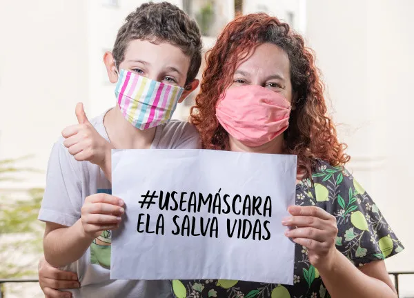

Covid-19 (coronavírus)

Sobre
Os coronavírus são uma grande família de vírus comuns em muitas espécies diferentes de animais, incluindo camelos, gado, gatos e morcegos. Raramente, os coronavírus que infectam animais podem infectar pessoas, como exemplo do MERS-CoV e SARS-CoV. Recentemente, em dezembro de 2019, houve a transmissão de um novo coronavírus (SARS-CoV-2), o qual foi identificado em Wuhan na China e causou a COVID-19, sendo em seguida disseminada e transmitida pessoa a pessoa.
Principais Sintomas
- Febre;
- tosse;
- dor de garganta e/ou coriza com ou sem falta de ar;
- Perda do Paladar e/ou Olfato;
- Cansaço
- COLOCAR MAIS SINTOMAS
Como é Transmitida
A transmissão da doença pode ocorrer diretamente, pelo contato com pessoas infectadas, ou indiretamente, pelo contato com superfícies ou objetos utilizados pela pessoa infectada. Evidências atuais sugerem que a maioria das transmissões ocorre de pessoas sintomáticas para outras.
Como Prevenir
- Mantenha uma distância segura de outras pessoas (pelo menos 1 metro), mesmo que elas não pareçam estar doentes.
- Use máscara em público, especialmente em locais fechados ou quando não for possível manter o distanciamento físico.
- Prefira locais abertos e bem ventilados em vez de ambientes fechados. Abra uma janela se estiver em um local fechado.
- Limpe as mãos com frequência. Use sabão e água ou álcool em gel.
- Tome a vacina quando chegar a sua vez. Siga as orientações locais para isso.
- Cubra o nariz e a boca com o braço dobrado ou um lenço ao tossir ou espirrar.
- Fique em casa se você sentir indisposição.
